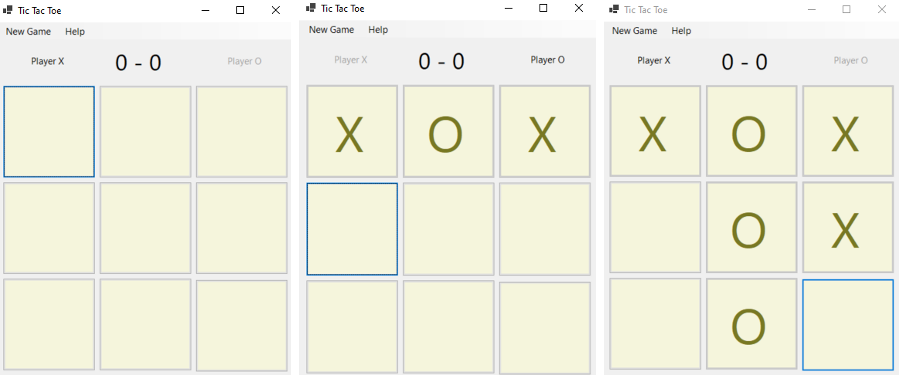
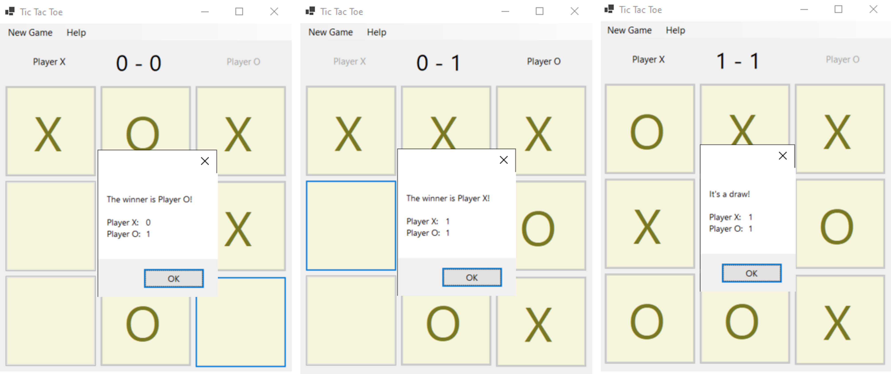

tinkering around
< |
Tic Tac Toe
July 2022 | Windows Application
Download & Github Code
* Click to download the game for Windows.
A game of tic-tac-toe?
- Created on C# 10 .NET 6.0 with option to play on CLI or Windows UI.
- Windows Form was used to create Windows UI.
- More details can be found here.

